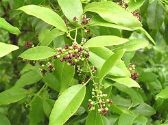

Basonym of Drug
Chandana
Main Synonym
- Shreekhanda
- Chandana
- Bhadrashre
- Tailaparnika
- Gandhasara
- Malayaja
- Chadradhruti
Regional Name
- Bengali: Chandana
- Gujarati: Sukhad
- Hindi: Chandana, Safeda Chandana
- Kannada: Sheegandhamara
- Tamil: Chandanam Maram
- Telugu: Gandhapu Chekka
Botanical Name
Santalum album Linn.
Family
Santalaceae
Classification (Gana)
- Aacharya Charak mentioned Chandana in Dahaprashaman, Angamardaprashaman, Trishnanigrahan, Varnya, Vishaghna, and Kandughna Mahakashaya.
- Acharya Sushruta mentioned Chandana in Salsaradi, Sarivadi, Patoladi, and Priyangvadi Gana.
- Acharya Vagbhatta mentioned Chandana in Asanadi, Patoladi, Sarivadi, Priyangvadi, Guduchyadi Gana.
External Morphology
A small to medium-sized tree
Useful Parts
- Heartwood
- Volatile oil
- Leaves
Important Phytoconstituent
Alpha-santalol, Santalenes, Santenol, Nor-tricycloekasantalal
Rasa Panchak
- Rasa: Tikta, Madhura
- Guna: Laghu, Ruksha
- Virya: Shita
- Vipaka: Katu
Action
Kaphapittahara
Therapeutic Indication
- Varnya (Good for skin)
- Dahaprashaman (Useful in burning sensations)
- Raktapittahara (Useful in skin and bleeding disorders)
Therapeutic Uses
- Chardi - Chandana powder with Amla juice is beneficial in vomiting.
- Pradara - Chandana is given along with milk, sugar, and honey for leucorrhea.
- Manjisthameha - Chandana and Arjuna's decoction is useful in haemoglobinuria and diabetes.
Dose
- Powder - 3-5 gm
- Decoction - 50-100 ml
Formulations
- Candanadi Ghrita
- Chandanadi Taila
- Chandanasav
- Chandandi Kwatha
Adverse Effect
Not Known